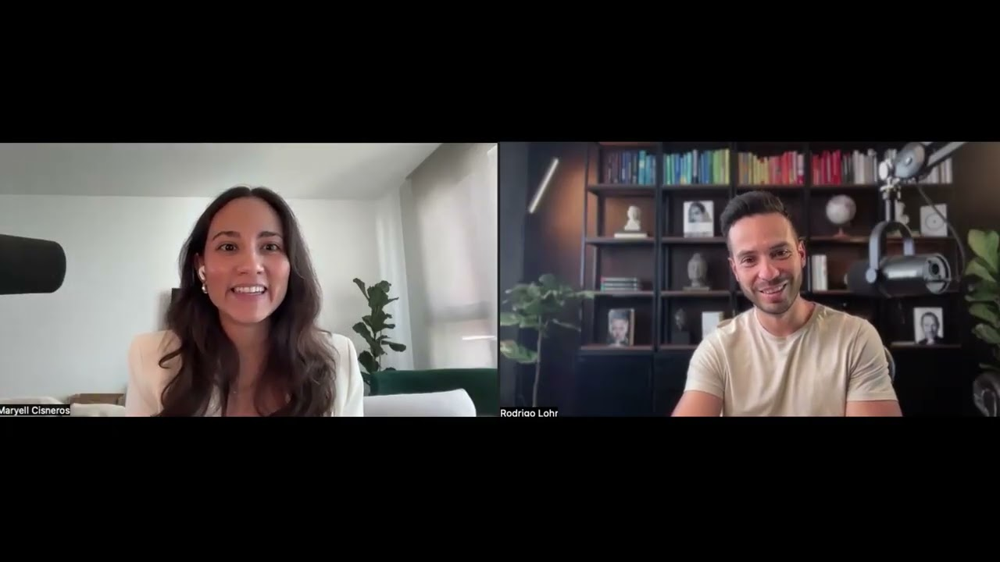
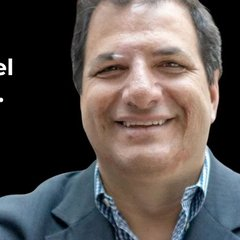
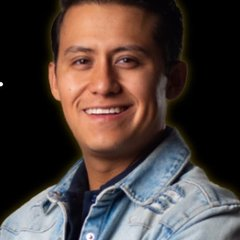

Si llegaste aquí, probablemente alguno de estos problemas te está pasando hoy
- Los leads que llegan no son los correctos. Te piden info, te dan largas, no contestan, no llegan a las llamadas — o llegan pero no pueden pagar lo que cobras.
- Estás agotado de tratar de convencer prospectos fríos que no entienden bien qué haces, y después de 2 horas en una llamada terminan diciendo "déjame pensarlo".
- Tus ads cada vez son más caros y tu margen cada vez más chico — facturas igual o más, pero al final del mes no te queda nada en la bolsa.
- Dependes de lanzamientos, webinars o crear contenido todos los días para vender. Funciona, pero te está agotando — y no es sostenible a largo plazo.
- No sabes de dónde va a venir tu próximo cliente. Algunas semanas vendes, otras no — y manifestar clientes te tiene en esa montaña rusa que no te deja planear ni respirar.
- Apenas estás arrancando y quieres un sistema simple y claro por donde empezar sin abrumarte con estrategias complicadas que probablemente no van a funcionar.
Si te pasa cualquiera de estas cosas, este playbook es para ti.
Lo que vas a leer es el sistema exacto que usamos en Flow Consulting para tener un flujo predecible y constante de clientes high ticket todos los días — sin matarnos creando contenido, sin lanzamientos agotadores, y sin quemar nuestra rentabilidad en anuncios.
- Si ya tienes un funnel funcionando (webinar, VSL, lanzamiento, reto), este sistema recupera las ventas que tu funnel pierde, baja tu CAC y le da a tu negocio la rentabilidad que necesitas para escalar en paz.
- Si apenas estás arrancando tu negocio, o si ya intentaste funnels complicados que no te funcionaron — he hecho webinars automatizados, lanzamientos, VSLs, live events, y este es por mucho el sistema más simple y rentable que he encontrado.
Pero te lo digo de frente: este sistema no hace magia. Funciona si haces bien cada parte. No si esperas un milagro.
Por qué cada vez eres menos rentable
Si llevas tiempo en el mundo del marketing digital, probablemente ya viviste esto:
Hace algunos años los webinars automatizados, luego los lanzamientos, después los VSL High Ticket, luego los setters y contenido orgánico — todo en su momento fue muy rentable. Invertías un dólar en ads y te regresaban diez. La gente confiaba en lo que veía en redes y compraba rápido. El juego era sencillo.
Hoy ese juego cambió.
Los ads ya no son lo que eran. Cada año hay más competencia, los costos por lead suben, y los márgenes se hacen más chicos. Las compañías grandes están entrando a invertir en publicidad digital y suben los costos para todos. Si dependes de ads para sobrevivir, le estás dando una rebanada cada vez más grande de tu negocio a Mark Zuckerberg como socio mayoritario.
La audiencia se volvió escéptica. Después de la pandemia mucha gente fue estafada por gurús que prometían lo imposible. Pero tu cliente ideal no dejó de comprar — solo se volvió más sofisticado, compara más, tarda más en decidir. Solo el 3% de las personas que ven tu oferta están listas para comprar hoy. El 97% necesita más confianza antes de pagarte — y los funnels tradicionales pierden a todo ese 97%.
El contenido orgánico se saturó. Hay más gente creando contenido que nunca. El alcance orgánico baja cada mes. Para mantener resultados tienes que publicar más, mejor y más seguido. Sin el sistema correcto y estar dispuesto a trabajar más duro que Alex Hormozi, esto es insostenible a largo plazo.
Y todo esto convive con un fundador agotado. Si vendes high ticket, te pasas el día en Zoom con prospectos fríos que no entienden lo que haces. Si haces lanzamientos, vives todo el mes en estado de alerta preguntándote si vas a recuperar tu inversión. Si vives del orgánico, te volviste esclavo de la creación de contenido. Cada modelo tiene su propia forma de quemarte.
Cuando los márgenes empiezan a apretarse, la mayoría de los emprendedores digitales hacen lo mismo: buscan hacer más.
- Otro funnel
- Otra oferta
- Más contenido
- Más personas en el equipo
- Más inversión en ads
- Más automatizaciones con inteligencia artificial
Cada cosa que agregan diluye un poco más su enfoque. Por fuera el negocio se ve más grande — más facturación, más equipo, más sistemas. Pero por dentro los márgenes se hacen cada vez más chicos.
Crecer es hacer el negocio más grande. Escalar es hacerlo más rentable mientras crece.
La industria entera está diseñada para que sigas cayendo en esta trampa. Cada plataforma, cada procesador de pagos, cada gurú, cada agencia, gana dinero de que tú factures más y gastes más — pero nadie parece estar interesado en cuánto dinero te queda en la bolsa.
El diagnóstico real: si tu negocio se siente tan complejo que ya no sabes ni por dónde arreglarlo, el problema no es que te falte un sistema más sofisticado. Es lo contrario. Tu negocio es demasiado complejo.
No necesitas hacer más. No necesitas otro nuevo funnel, ni una nueva oferta, ni más automatizaciones. Necesitas un sistema más simple.
Y para eso, primero tienes que entender por qué los funnels tradicionales ya no funcionan — y por qué un flywheel es completamente diferente.
Empujar todos los días, o construir momentum
Un funnel tradicional asume que el cliente va a comprar hoy. Si no compra, lo perdiste. Tienes que volver a meter dinero en publicidad para traer al siguiente. Es un sistema que vive de empujar.
Un flywheel funciona al revés. Es una rueda que cuesta trabajo arrancar — pero una vez que toma velocidad, gira por sí sola. Cada vuelta nueva requiere menos esfuerzo que la anterior, porque el momentum acumulado crea un efecto de bola de nieve que hace el trabajo por ti.
A esto yo le llamo un Sistema de Flujo Infinito. Una vez que lo activas, todo en tu negocio — prospectos, ventas, dinero — fluye cada vez más rápido con cada vuelta.
| Funnel tradicional webinars · lanzamientos · VSL · low ticket | Flywheel Infinite Flow Funnel | |
|---|---|---|
| Cómo funciona | Vive de empujar. Cada venta requiere el mismo esfuerzo que la anterior. | Vive de momentum. Cada vuelta facilita la siguiente. |
| Cuándo funcionaba mejor | Antes de la pandemia, cuando no había competencia y los clientes confiaban en cualquier vende-humos con muchos followers. | Hoy. Cuando los clientes inteligentes se han vuelto más sofisticados y se aseguran de investigar a detalle que seas real. |
| Asume que | El cliente compra hoy (necesita urgencia, escasez y manipulación para presionar la decisión). | El 97% de los prospectos no compra hoy — y los retiene hasta que estén listos. |
| Estructura del viaje | Lineal. Contenido → Funnel → Compra (o se pierde). | Circular. El prospecto entra al ecosistema, recibe valor desde múltiples puntos, sube su nivel de consciencia, y compra cuando está listo. |
| Foco del negocio | Generar ventas constantes para sobrevivir. El producto pasa a segundo plano. | Hacer al producto y al servicio tan buenos que se conviertan en el mejor marketing. |
| Marketing, ventas y producto | Cada parte sabotea a las demás. | Cada parte fortalece a las demás. Los resultados de tus clientes hacen el marketing más fácil; el marketing más fácil hace las ventas más fáciles. |
| Costo por cliente | Sube cada año con los ads. | Baja con el tiempo (referidos, testimonios, recompras). |
| Márgenes al escalar | Se achican. | Crecen. |
| Dependencia de ads | Total. Si paras, paran las ventas. | Parcial. El sistema también produce ventas desde contenido, email, referidos y recompras. |
| Dependencia del fundador | Alta. Si bajas el ritmo, baja todo. | Baja. Cuando trabajas duro acelera. Cuando descansas, sigue girando. |
| Cómo se siente operarlo | Como pedalear con un camión detrás a punto de aplastarte y que no te deja frenar. | Como pedalear a máxima velocidad cuando tienes ganas, y descansar con el viento en la cara mientras el momentum te sigue impulsando. |
Esa es la diferencia. Un funnel tradicional vive de empujar. Un flywheel vive de momentum.
Cuando tienes momentum, escalar deja de ser un sacrificio y se convierte en consecuencia natural de mantener el sistema funcionando.
Mi funnel minimalista para vender high ticket por Instagram sin tanto drama
Este es el video exacto de 14 minutos que uso para capacitar a nuevos miembros de mi equipo sobre nuestra estrategia de marketing y ventas:
Lo que se ve por fuera vs. lo que hay detrás
Si me has seguido en Instagram, lo que ves desde afuera son cinco pasos:
1. Reel/Story → 2. Recurso Gratis → 3. DM → 4. Llamada → 5. Venta
Cinco pasos simples. Para tu cliente ideal, así de claro tiene que sentirse el camino para trabajar contigo.
Detrás de esos 5 pasos hay 12 sistemas trabajando juntos para que el funnel sea sostenible, escalable y rentable. Aquí abajo te platico, a detalle, lo que hay detrás.
Checklist práctico para activar tu Infinite Flow Funnel
Cada uno es simple por sí solo. Lo importante no es que sean perfectos — es que estén alineados entre sí. Cuando todos trabajan en sinergia, el sistema empieza a girar solo y cada vez requiere menos esfuerzo del fundador.
- 01Sistema de AdsLa misma cantidad de reels y carruseles que ya estás publicando orgánicamente, pero estructurados con una arquitectura narrativa específica que hace que tu prospecto vaya entendiendo tu diferencial y tu oferta. Cuando el contenido orgánico está creado de forma estratégica, se convierte en un activo de marketing que después puedes automatizar con un poco de presupuesto en ads para crear un flujo predecible y constante de leads — incluso si no estás publicando contenido todos los días.
- 02Perfil de Instagram OptimizadoTu perfil es tu landing page principal. Bio clara, link estratégico, highlights organizados con casos de éxito, y un feed que comunica para quién eres y qué resuelves en menos de cinco segundos. Cuando alguien llega de un ad o de un reel, el perfil tiene que vender por sí solo. (Puedes ver el mío para tener un ejemplo: @rodrigolohr)
- 03Sistema de Contenido Orgánico de InstagramPosts y stories con una arquitectura de marketing que separa la señal del ruido — atrae a tu cliente ideal y filtra al que no es. Tiene que estar adaptado a tu personalidad: hay quien comunica mejor escribiendo, otros en video. Apalanca inteligencia artificial sin perder tu autenticidad para que crear contenido se sienta ligero y repetible.
- 04Sistema de SetterUna persona que se apalanca de automatizaciones e inteligencia artificial para conversar con tu cliente ideal por DM en Instagram. Su trabajo es recuperar las ventas que hoy se te están escapando — los leads que llegan a tu perfil pero no agendan, los que descargan un recurso pero no contestan, los que mostraron interés pero se enfriaron. Sin un setter, ese 80% de los leads se pierde.
- 05Sistema de Lead MagnetsRecursos genuinamente valiosos que entregas a cambio de un DM o un email. Tienen que dar claridad a tu prospecto, cambiarle la manera de ver las cosas, o solucionarle un problema específico. Pueden ser videos de YouTube, documentos en Notion, checklists, mini-clases o newsletters. Su función es convertir tráfico curioso en una audiencia que confía en ti.
- 06Página de AplicaciónUn formulario de aplicación que filtra y un calendario donde los prospectos pueden agendar una llamada. El formulario sirve para entender contexto antes de la llamada y descalificar a quienes no son tu cliente ideal. Cuando un prospecto llega a tu calendario, ya está pre-calificado.
- 07Pre-Call Flow SystemEl proceso entre que el prospecto agenda y llega a la llamada. Le ayudas a investigar y encontrar la información que necesita para tener más claridad de cómo funciona tu producto o servicio. Y al mismo tiempo, tú investigas su negocio y diagnosticas si realmente lo puedes ayudar — y si no, cancelas la llamada para no hacerle perder el tiempo. Así ambos llegan listos para una conversación de calidad.
- 08Llamada de Venta ConsultivaUna conversación donde diagnosticas el problema real del prospecto, le das claridad sobre qué necesita, y le presentas tu oferta solo si tiene sentido para ambos. No es un pitch para convencerlo de nada — es una conversación consultiva donde la venta ocurre como consecuencia natural. No estás cerrando una venta — estás abriendo una relación.
- 09Effortless OffersOfertas diseñadas para venderse con la mínima fricción posible. Tienen que ser tan claras y agregar tanto valor que puedan venderse sin presión ni técnicas de cierre. Al mismo tiempo, deben estar diseñadas de una manera en la que sean simples para ti entregar — para que no estés vendiendo tu alma con cada venta. Cuando una oferta está bien diseñada, tu cliente debe sentir que recibe mucho más de lo que paga, y tú debes sentir que ganas mucho más de lo que trabajas.
- 10Producto, Onboarding y FulfillmentEl sistema que transforma a un cliente que pagó en un caso de éxito. Tiene tres partes que tienen que funcionar bien juntas: un producto o servicio que genuinamente entrega resultados, un onboarding que prepara al cliente para aprovecharlo al máximo, y un fulfillment con puntos de activación claros que aseguren que llegue al resultado prometido. Sin esto, ningún esfuerzo de marketing es sostenible — porque los casos de éxito son el combustible del flywheel, y los casos de éxito solo existen si tus clientes obtienen resultados reales.
- 11Captura de Casos de Éxito, Renovaciones y ReferidosUna vez que tu cliente obtiene resultados, capturas su testimonio, le ofreces la siguiente oferta que tiene sentido para él (renovación o upsell), y activas el proceso para que te traiga referidos. Cada caso de éxito alimenta el sistema de contenido orgánico, los lead magnets y los ads — cerrando el flywheel.
- 12Infinite Follow Up SystemSistemas automatizados que te mantienen top of mind con los prospectos que no compraron en la primera llamada. Eventualmente, cuando estén listos, regresan al calendario o a comprar — sin que tengas que perseguir a nadie.
Ningún sistema funciona bien por sí solo. Es la sinergia de los doce lo que crea el efecto bola de nieve — y eso es exactamente lo que diferencia este flywheel de cualquier funnel tradicional.
KPIs reales y ejemplos replicables del Infinite Flow Funnel
En el negocio
En el fundador
Los casos que vas a ver aquí abajo son clientes con los que hemos simplificado su negocio, sus operaciones y sus sistemas de marketing. Algunos usan exactamente mi mismo sistema. Otros lo combinan con el que ya tenían funcionando. Pero el resultado siempre es el mismo: escalan con mayor libertad, rentabilidad y paz mental.
Si miras sus entrevistas, vas a ver que ninguno trabajó más duro y ninguno gastó más en publicidad. No hicieron más — simplemente quitamos lo que sobraba.
$70K USD mensuales. Leads infinitos, ventas sin fricción y un negocio alineado que le permite vivir en flow.
Mi error al principio fue entender el flow como yo hacerlo todo sola. El flow es todo: el equipo, los sistemas. Tengo el equipo para que yo pueda ir al gimnasio, al sauna, a terapia. Eso es lo que hace que yo también me permita entrar en flow.

$60K USD mensuales con 42× de retorno (ROAS). Negocio automatizado, fundador sin burnout.
Estoy transicionando del emprendedor que lo hace todo al emprendedor que tiene mucho tiempo libre. Doy tres o cuatro directrices en la mañana y otras personas están trabajando para mí.

$15K USD semanales con +80% de rentabilidad. Una sola persona en su equipo, sin funnels complicados, más tiempo libre y sin burnout.
Recuperé mi paz, mi tiempo y la posibilidad de estar presente con mis hijos.

De $49K a $150K USD mensuales sin invertir más en publicidad. Triplicó sus ventas aplicando los principios de este sistema a su narrativa.

$21,000 USD en su primera semana con 80% de rentabilidad. Después de 10 años haciendo lanzamientos donde tenía ROAS positivo pero ROI negativo.
Ninguna plata vale mi tiempo, mi paz, mi salud mental y emocional. Eso no tiene precio.


+$350,000 USD de récord histórico en el primer mes trabajando juntos. El mes de mayor venta de cursos en línea en español en la historia de Growth Institute.

De 7 meses sin facturar un solo euro a €30,000 en 2 meses implementando los ajustes correctos.

Más de $60K USD mensuales en sus primeros 2 meses. Con retorno de +10× (ROAS).

Reconectó y alineó su estrategia a su esencia después de pagar $60K USD por una mentoría rígida que la había desconectado. Hoy sigue escalando su comunidad desde el flow.
Tener alineada la estrategia con tu verdad es el paso número uno para que un negocio escale.


De $20K a $75K USD mensuales con retorno de 15× (ROAS).
La claridad da dinero.

Todos llegaron pensando lo mismo.
Que necesitaban hacer más para escalar.
Más ads, más contenido, más equipo, más funnels, más automatizaciones.
Lo que descubrieron fue lo opuesto. Su problema nunca fue que les faltara algo — era que les sobraba. Cuando simplificaron su sistema y dejaron que el momentum hiciera el trabajo, todo lo demás cayó en su lugar.
No me creas a mí — tómate el tiempo de escuchar sus entrevistas y decide por ti mismo.
Agenda tu llamada de diagnóstico
Si después de leer esto sientes que quieres tener este funnel funcionando en tu negocio, puedes agendar una llamada aquí abajo o mandarme la palabra FUNNEL por DM a mi Instagram.
Agendar llamada de diagnóstico →Este funnel es simple, pero para que funcione, tu oferta y tu mensaje de marketing tienen que estar extremadamente claros. En la llamada vamos a diagnosticar dónde está el verdadero cuello de botella en tu negocio para que puedas escalar con un sistema mucho más simple y rentable.
Como pudiste ver en cada uno de los casos, el problema nunca está en hacer más cosas o agregar más complejidad — está en identificar qué no está funcionando y quitar todo lo que sobra. El sistema no funciona porque sea más pesado, funciona porque es más ligero.
Si te hace sentido, también te platicamos cómo te podemos acompañar en el proceso. Pero incluso si decides no hacerlo, te vas con muchísima más claridad de cuáles son tus siguientes pasos — y qué cosas deberías quitar para que tu negocio sea más simple y rentable.